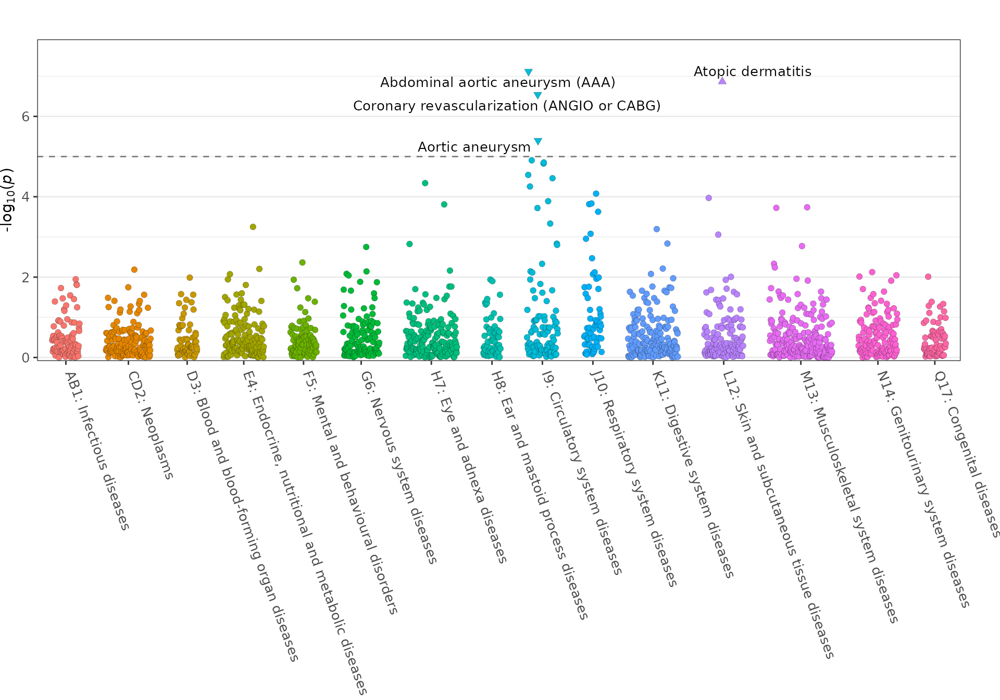
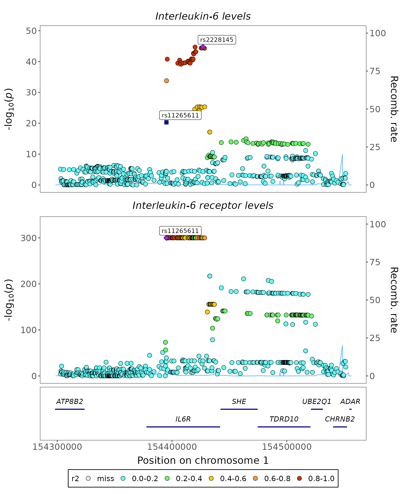

Overview
The geni.plots R package is a tool for visualising
results from genome-wide association studies (GWAS) and phenome-wide
association studies (PheWAS). The package can currently produce
Manhattan plots, quantile-quantile (QQ) plots, and regional plots using
GWAS summary statistics using the fig_manhattan(),
fig_qq(), and fig_region() functions,
respectively. In addition, PheWAS plots can be constructed using the
fig_phewas() function.
Functions
The package contains the following functions:
-
fig_manhattan: creates a Manhattan plot for genomic markers from across the genome, e.g. results from genome-wide association studies.
-
fig_phewas: creates a plot visualising results from phenome-wide association studies (PheWAS).
-
fig_qq: creates a quantile-quantile (QQ) plot.
-
fig_region: creates a regional plot, i.e. a scatter graph of genomic markers associations (e.g. log10(p-values)) with a gene bar underneath.
-
fig_stack_region: creates a stacked regional association plot.
Data
The package contains formatted test data downloaded from FinnGen r9 (1:154426970-A-C) and from GWAS studies on IL6 (GCST90274815) and IL6R (GCST90274815) levels from the GWAS Catalog server.
-
geni_test_manhattan- adata.frameof results from a GWAS of interleukin-6 levels with p-values <1e-3(GCST90274815). The genomic coordinates used are GRCh37. A description of this data can be viewed usinghelp(geni_test_gwas).
-
geni_test_phewas- adata.frameof PheWAS results for rs from FinnGen r9 (1:154426970-A-C). A description of this data can be viewed usinghelp(geni_test_phewas).
-
geni_test_region- alistcontaining:-
assoc- adata.frameof results from a GWAS of interleukin-6 levels for the GRCh37 region 1:154301970-154551970 (GCST90274815). The genomic coordinates used are GRCh37. A description of this data can be viewed usinghelp(geni_test_region).
-
corr- amatrixof correlation statistics for the markers inassocusing the European samples from 1000 Genomes Phase 3. The genomic coordinates used are GRCh37.
-
-
geni_test_stack_region- alistcontaining:-
assoc- adata.frameof results from GWAS studies on interleukin-6 and interleukin 6 receptor levels for the GRCh37 region 1:154301970-154551970 (GCST90274815 and GCST90088597). The genomic coordinates used are GRCh37. A description of this data can be viewed usinghelp(geni_test_region).
-
corr- amatrixof correlation statistics for the markers inassocusing the European samples from 1000 Genomes Phase 3. The genomic coordinates used are GRCh37.
-
Plots
Manhattan plot
geni.plots::geni_test_manhattan %>%
as_tibble() %>%
head()
#> # A tibble: 6 × 6
#> chr pos pvalue highlight highlight_shape label
#> <chr> <int> <dbl> <dbl> <dbl> <chr>
#> 1 1 963661 0.000154 0 0 ""
#> 2 1 968251 0.000538 0 0 ""
#> 3 1 1010040 0.000167 0 0 ""
#> 4 1 1112698 0.000682 0 0 ""
#> 5 1 2031103 0.0000897 0 0 ""
#> 6 1 2036650 0.000207 0 0 ""
fig_manhattan(
data = geni.plots::geni_test_manhattan,
block_thresh = 1e-4,
label_box = TRUE
)
Further details regarding functionality of the
fig_manhattan function can be viewed using the command
help(fig_manhattan).
PheWAS plot
geni.plots::geni_test_phewas %>%
as_tibble() %>%
head()
#> # A tibble: 6 × 5
#> pvalue sign group label text
#> <dbl> <dbl> <chr> <chr> <chr>
#> 1 0.375 -1 AB1: Infectious diseases Actinomycosis Phen…
#> 2 0.0506 1 AB1: Infectious diseases Amoebiasis Phen…
#> 3 0.112 1 AB1: Infectious diseases Anogenital herpesviral [herpes si… Phen…
#> 4 0.287 -1 AB1: Infectious diseases Aspergillosis Phen…
#> 5 0.0352 -1 AB1: Infectious diseases Atypical virus infections of cent… Phen…
#> 6 0.0113 1 AB1: Infectious diseases Bacterial, viral and other infect… Phen…
fig_phewas(
data = geni.plots::geni_test_phewas,
axis_text_angle = -70,
axis_text_size = 10,
label_size = 3.5
)
Note: this figure can be made interactive by setting
interactive = TRUE.
Further details regarding functionality of the
fig_phewas function can be viewed using the command
help(fig_phewas).
QQ plot
Simple
fig_qq(
pvalues = geni.plots::geni_test_phewas$pvalue
)
Further details regarding functionality of the fig_qq
function can be viewed using the command help(fig_qq).
Categories
fig_qq(
data = geni.plots::geni_test_phewas %>%
select(pvalue, group, label, text),
legend_title = "Category",
legend_title_size = 10,
legend_text_size = 8
)Note: this figure can be made interactive by setting
interactive = TRUE.
Further details regarding functionality of the fig_qq
function can be viewed using the command help(fig_qq).
Regional plot
Regional plot
fig_region(
data = geni.plots::geni_test_region$assoc,
corr = geni.plots::geni_test_region$corr,
build = 37
)Note:
- this figure can be made interactive by setting
interactive = TRUE
-
corrhas to have the same markers asassocin the same order
- by default
fig_regionassumescorr(orcorr_top) contains correlation statistics that have not been squared, ifcorris a squared correlation matrix setr2 = TRUE
Further details regarding functionality of the
fig_region function can be viewed using the command
help(fig_region).
Stacked regional plot
fig_region_stack(
data = geni.plots::geni_test_stack_region$assoc,
traits = c("Interleukin-6 levels", "Interleukin-6 receptor levels"),
corr = geni.plots::geni_test_stack_region$corr,
build = 37,
highlights = "rs11265611",
title_center = TRUE
)
Note:
- this figure can be made interactive by setting
interactive = TRUE
-
corrhas to have the same markers asassocin the same order
- by default
fig_region_stackassumescorr(orcorr_top) contains correlation statistics that have not been squared, ifcorris a squared correlation matrix setr2 = TRUE
Further details regarding functionality of the
fig_region_stack function can be viewed using the command
help(fig_region_stack).